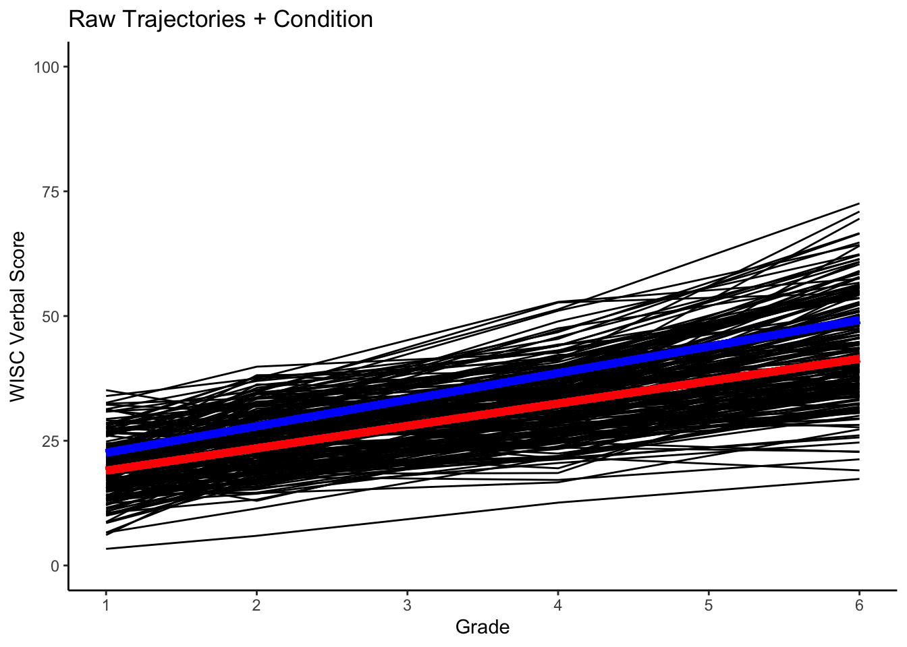
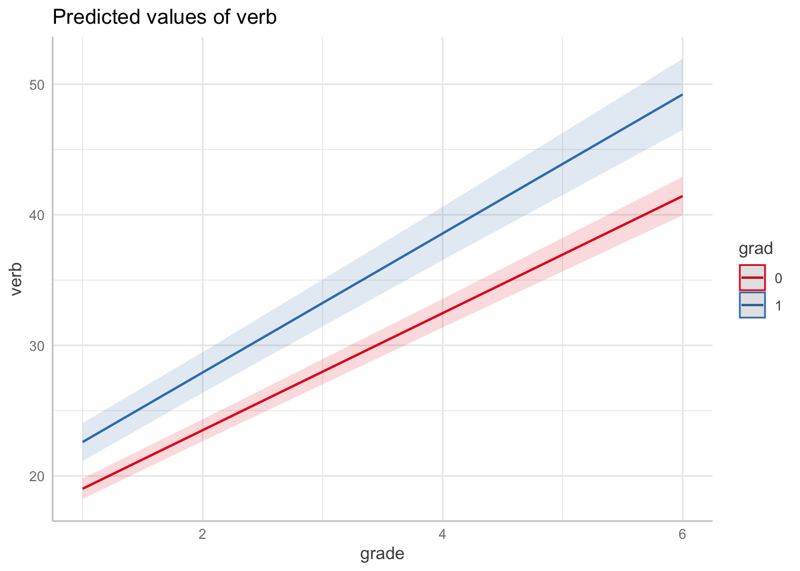
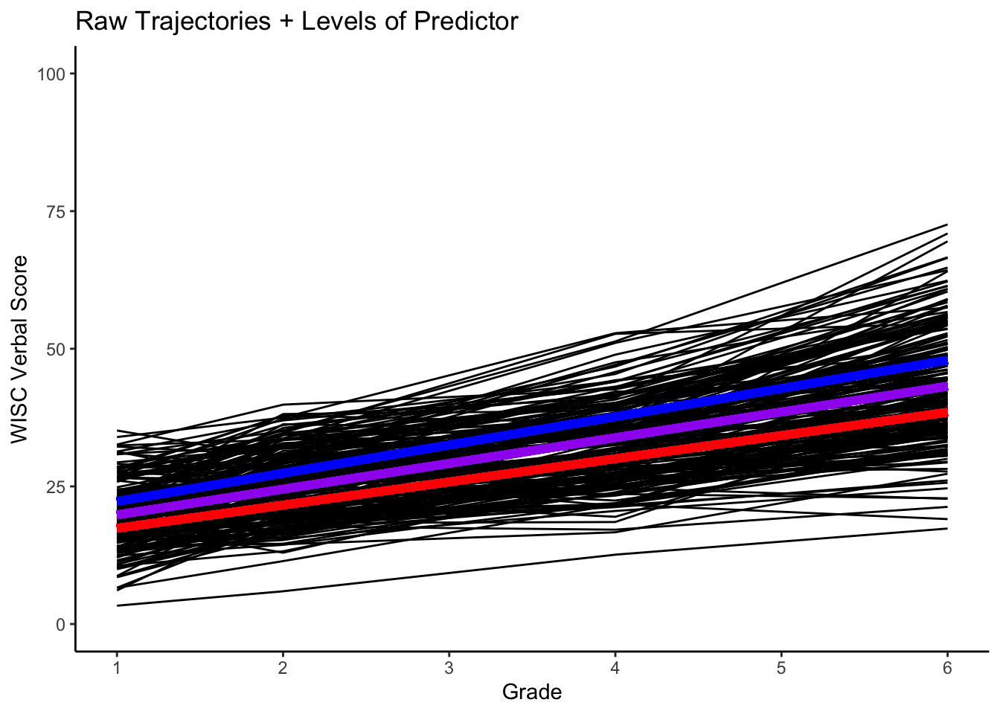
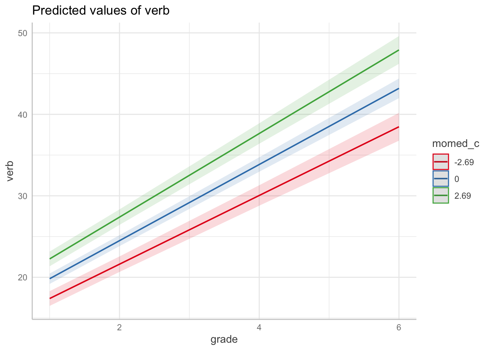

13.7 Conditional Growth Model
The growth curve modeling framework also allows us to consider other important questions regarding developmental change. For example,
- Are the noted between-person differences in the trajectories of change related to other measured between-person difference variables?
- Can the variability we see in in the intercept and slope be explained by one or more time-invariant covariates?
13.7.2 Conditional Growth Model 1
Let’s go back and look at our data. The data include 2 additional time-invariant covariates, momed and grad.
Let’s add a predictor to our model. In this case we will add grad (which is coded 0,1) as a conditional predictor.
cgm1_fit <- lme(
fixed= verb ~ 1 + grade + grad + grade:grad,
random= ~ 1 + grade|id,
data=verblong,
na.action = na.exclude
)
summary(cgm1_fit)## Linear mixed-effects model fit by REML
## Data: verblong
## AIC BIC logLik
## 5031.753 5069.349 -2507.876
##
## Random effects:
## Formula: ~1 + grade | id
## Structure: General positive-definite, Log-Cholesky parametrization
## StdDev Corr
## (Intercept) 3.761291 (Intr)
## grade 1.194941 0.255
## Residual 3.581590
##
## Fixed effects: verb ~ 1 + grade + grad + grade:grad
## Value Std.Error DF t-value p-value
## (Intercept) 14.533795 0.4098491 610 35.46133 0.0000
## grade 4.483657 0.1205883 610 37.18152 0.0000
## grad 2.737137 0.8630981 202 3.17129 0.0018
## grade:grad 0.841424 0.2539460 610 3.31340 0.0010
## Correlation:
## (Intr) grade grad
## grade -0.215
## grad -0.475 0.102
## grade:grad 0.102 -0.475 -0.215
##
## Standardized Within-Group Residuals:
## Min Q1 Med Q3 Max
## -2.57955642 -0.53942829 -0.01662113 0.51067259 3.19891929
##
## Number of Observations: 816
## Number of Groups: 20413.7.2.1 Marginal Effects
Let’s make grad (\(=1\)) and non-grad (\(=0\)) prototypical trajectories.
## (Intercept) grade grad grade:grad
## 14.5337953 4.4836569 2.7371369 0.8414241Create a function for the mean trends.
#for grad = 0
fun_cgm_grad0 <- function(x) {
grad=0
FE[1] + FE[2]*x + FE[3]*grad + FE[4]*x*grad
}
#for grad = 1
fun_cgm_grad1 <- function(x) {
grad=1
FE[1] + FE[2]*x + FE[3]*grad + FE[4]*x*grad
}Plot with the mean trends for no-grad (red) and grad (blue) trajectories.
#plotting intraindividual change with overlay of group trends
ggplot(data = verblong, aes(x = grade, y = verb, group = id)) +
ggtitle("Raw Trajectories + Condition") +
# geom_point() +
geom_line() +
xlab("Grade") +
ylab("WISC Verbal Score") + ylim(0,100) +
scale_x_continuous(breaks=seq(1,6,by=1)) +
stat_function(fun=fun_cgm_grad0, color="red", size = 2) +
stat_function(fun=fun_cgm_grad1, color="blue", size = 2) +
theme_classic()## Warning: Multiple drawing groups in `geom_function()`
## ℹ Did you use the correct group, colour, or fill aesthetics?
## Multiple drawing groups in `geom_function()`
## ℹ Did you use the correct group, colour, or fill aesthetics?
Note, we can also use packages designed to produce and plot marginal effects. The ggeffects package is capable of producing marginal effects plots from `lme models. Here we produce the plots above in a single line of code.

13.7.3 Conditional Growth Model 1
Now, let’s consider momed as a (continuous) predictor. First, we will center momed at sample-level mean. Note this is done using the wide data set.
Note, it is important to remember that the substantive interpretation of the level-2 regression parameters is affected by the scaling and centering of the time-invariant covariates. As in standard regression models, when time-invariant covariates are centered at their sample level means, the coefficients indicate the expected intercept and slope for an average person rather than for a hypothetical person with scores of zero on all the predictors.
## vars n mean sd median trimmed mad min max range skew kurtosis se
## X1 1 204 10.81 2.7 11.5 11 2.97 5.5 18 12.5 -0.36 0.01 0.19## [1] 10.81127## [1] 2.698279#Computing centered variable in long data
verblong$momed_c <- (verblong$momed-momed_mean)
describe(verblong$momed_c)## vars n mean sd median trimmed mad min max range skew kurtosis se
## X1 1 816 0 2.69 0.69 0.19 2.97 -5.31 7.19 12.5 -0.36 0.03 0.09Fitting conditional growth model with momed (centered) as predictor
cgm2_fit <- lme(
fixed= verb ~ 1 + grade + momed_c + grade:momed_c,
random= ~ 1 + grade|id,
data=verblong,
na.action = na.exclude
)
summary(cgm2_fit)## Linear mixed-effects model fit by REML
## Data: verblong
## AIC BIC logLik
## 5000.914 5038.51 -2492.457
##
## Random effects:
## Formula: ~1 + grade | id
## Structure: General positive-definite, Log-Cholesky parametrization
## StdDev Corr
## (Intercept) 3.394993 (Intr)
## grade 1.158315 0.163
## Residual 3.581594
##
## Fixed effects: verb ~ 1 + grade + momed_c + grade:momed_c
## Value Std.Error DF t-value p-value
## (Intercept) 15.150993 0.3424175 610 44.24713 0
## grade 4.673390 0.1041157 610 44.88652 0
## momed_c 0.734066 0.1272144 202 5.77031 0
## grade:momed_c 0.169838 0.0386809 610 4.39075 0
## Correlation:
## (Intr) grade momd_c
## grade -0.301
## momed_c 0.000 0.000
## grade:momed_c 0.000 0.000 -0.301
##
## Standardized Within-Group Residuals:
## Min Q1 Med Q3 Max
## -2.56783083 -0.54388373 -0.01862407 0.51810887 3.19394049
##
## Number of Observations: 816
## Number of Groups: 20413.7.3.1 Marginal Effects
We can extract the fixed effects for a prototypical trajectory.
## (Intercept) grade momed_c grade:momed_c
## 15.1509929 4.6733898 0.7340657 0.1698381Now, let’s consider momed at the mean value, as well as low (-1SD) and high (+1SD) values.
Low value of momed.
fun_cgm_momed_low <- function(x) {
momed=0-1*momed_sd
FE2[1] + FE2[2]*x + FE2[3]*momed + FE2[4]*x*momed
}Average value of momed.
High value of momed.
fun_cgm_momed_high <- function(x) {
momed=0+1*momed_sd
FE2[1] + FE2[2]*x + FE2[3]*momed + FE2[4]*x*momed
}Plot with the prototypical -1SD (red), prototypical 0SD (magenta) and prototypical +1SD (blue) trajectories.
#plotting intraindividual change with overlay
ggplot(data = verblong, aes(x = grade, y = verb, group = id)) +
ggtitle("Raw Trajectories + Levels of Predictor") +
# geom_point() +
geom_line() +
xlab("Grade") +
ylab("WISC Verbal Score") + ylim(0,100) +
scale_x_continuous(breaks=seq(1,6,by=1)) +
stat_function(fun=fun_cgm_momed_low, color="red", size = 2) +
stat_function(fun=fun_cgm_momed_ave, color="purple", size = 2) +
stat_function(fun=fun_cgm_momed_high, color="blue", size = 2) +
theme_classic()## Warning: Multiple drawing groups in `geom_function()`
## ℹ Did you use the correct group, colour, or fill aesthetics?
## Multiple drawing groups in `geom_function()`
## ℹ Did you use the correct group, colour, or fill aesthetics?
## Multiple drawing groups in `geom_function()`
## ℹ Did you use the correct group, colour, or fill aesthetics?
Again, we can obtain a similar plot using packages designed to plot marginal effects.
